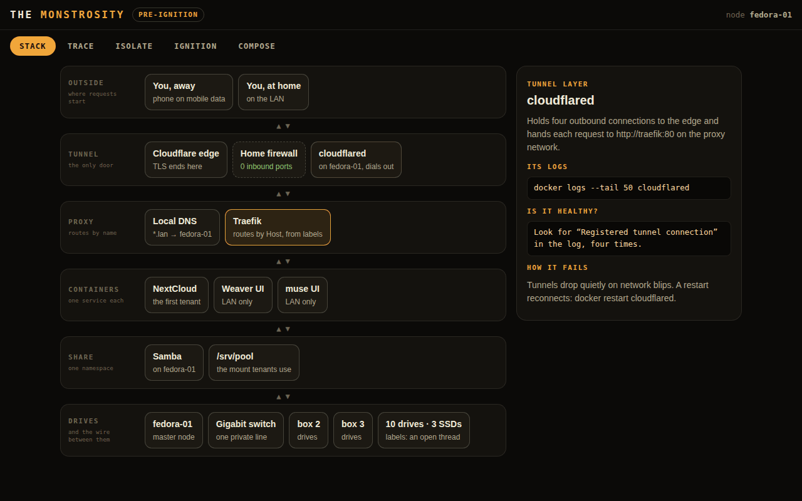

The private line
A cheap gigabit switch puts all three machines on one segment. Machine-to-machine traffic never touches the open internet, and static leases keep anything from drifting on reboot.
A bolted-together, beautifully chaotic homelab: three machines on a private line, ten drives and three SSDs in one namespace, Traefik routing by itself, and a tunnel as the only door. Built to be opened, understood and grown.
The console: the stack, a traced request, the troubleshooter, the ignition checklist, a starter stack

A stack you can open and understand. Storage is one organ among many, routed through a proxy that wires up new services by itself and fronted by a door with no holes punched in the firewall. It's also where the rest of the atlas is meant to live: Weaver and muse are among the first tenants. The Monstrosity console lays the whole thing out, layer by layer.
A cheap gigabit switch puts all three machines on one segment. Machine-to-machine traffic never touches the open internet, and static leases keep anything from drifting on reboot.
The Fedora server anchors it, and Samba pulls ten drives and three SSDs, scattered across the boxes, into one shared namespace. The naming is decided before anything mounts.
Every service in its own container. Traefik watches the Docker socket and routes a new container the moment its labels appear: no manual proxy edits, ever.
The only front door. cloudflared dials out from the master node, so no inbound port is ever opened on the home firewall. Everything that doesn't need outside reach stays on the LAN.
Isolate the layer before you debug it. Drive, share, container, proxy, tunnel: each keeps its own logs. The console's troubleshooter walks them bottom up, with the real commands (journalctl -k, testparm, docker logs, a curl with a Host header, the tunnel's own log), and stops at the first layer that doesn't look right. It never guesses across layers.
The original entry, with its five phases, the troubleshooting notes and the ignition sequence, is still the source of truth: read build log 001 →
Pre-ignition: this is the plan, the troubleshooting rules and a working starter stack, not a running cluster. The ignition checklist is still unticked, and the drive-labelling scheme is an open thread. Cloudflare sits in the middle of external traffic, a trade-off the log names out loud and leaves to be revisited. The console's checklist ticks are kept on your device only. First node officially alive: not yet.
Not a rented cloud tier. Not a black box you trust and forget.
more in toolskeep scrolling · it opens right here